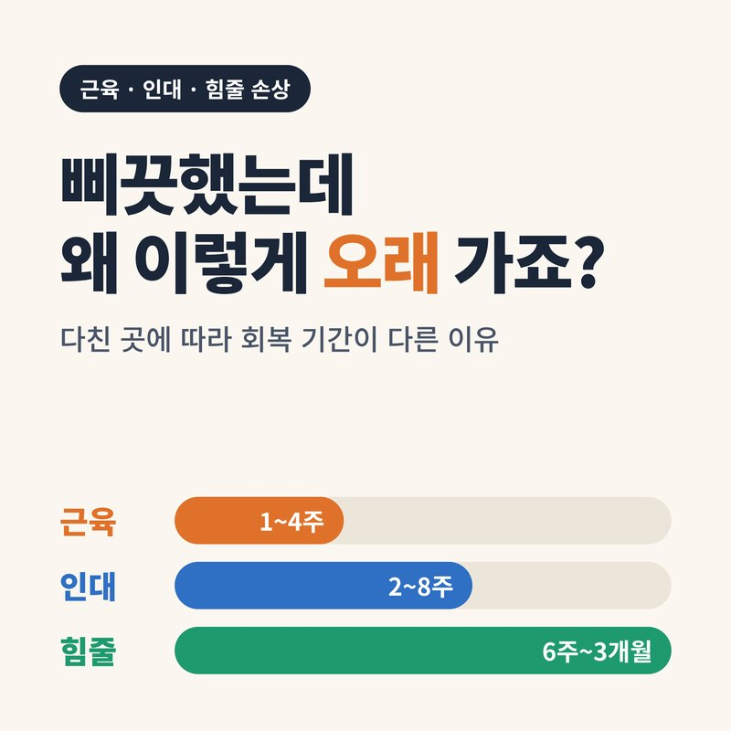
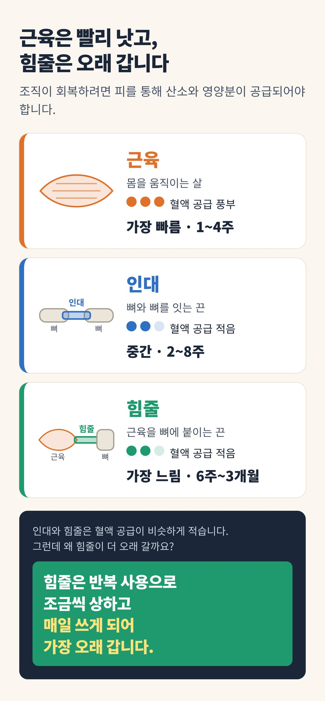
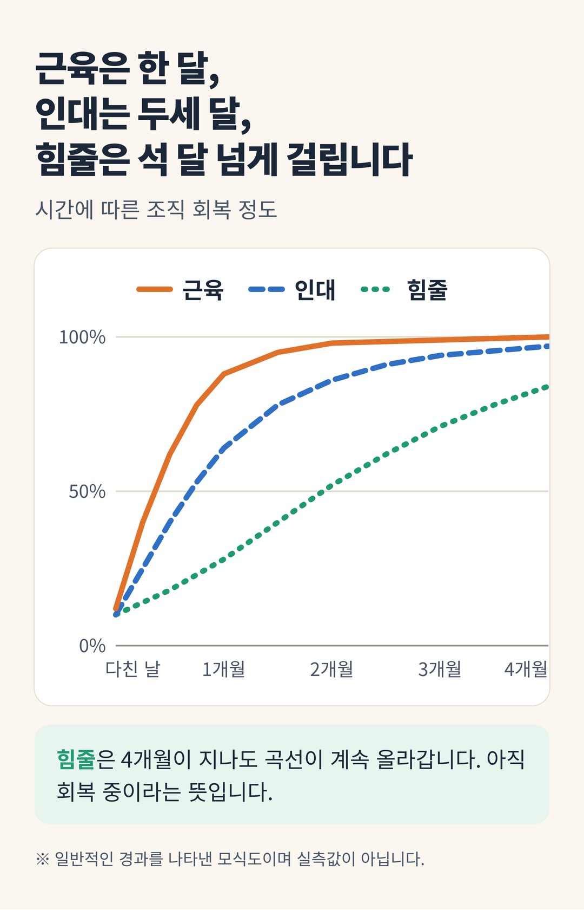
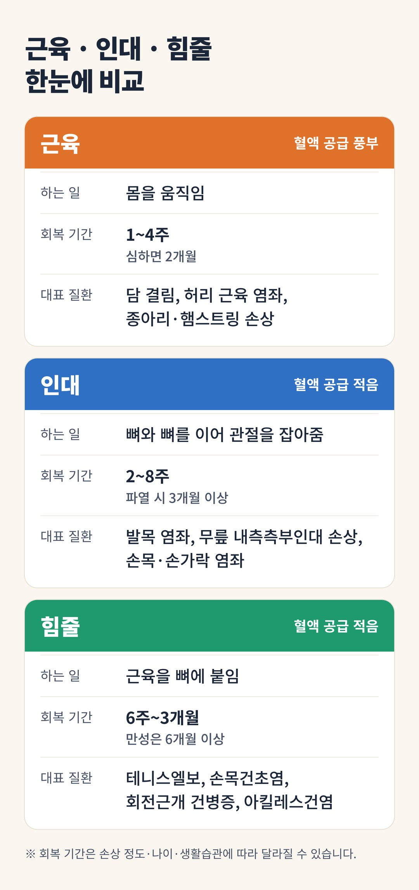
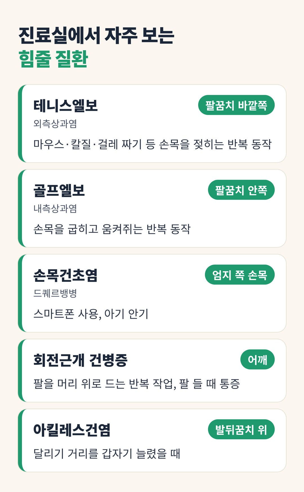

삐끗했는데 왜 이렇게 오래 가죠? 근육·인대·힘줄 손상의 회복 이야기

같은 '삐끗'인데 회복 기간은 왜 다를까요?
똑같이 "삐끗했다"고 오셨는데, 어떤 분은 1~2주 만에 털고 일어나고 어떤 분은 석 달이 지나도 아프다고 하십니다. 차이는 대부분 어느 조직을 다쳤느냐에 있습니다.
우리 몸을 움직이는 연부조직은 크게 근육, 인대, 힘줄(건) 세 가지입니다.
이 셋은 피가 도는 정도와 사용되는 방식이 달라서 회복 속도도 크게 다릅니다.
오늘은 각 조직이 왜 다르게 낫는지, 진료실에서 자주 보는 질환은 무엇인지 그림과 표로 정리해 보겠습니다.
근육·인대·힘줄은 어떻게 다를까요?

조직이 회복하려면 피를 통해 산소와 영양분이 공급되어야 합니다.
혈관이 풍부한 근육은 빨리 낫고, 혈관이 적은 인대와 힘줄은 오래 걸립니다.
인대와 힘줄의 혈액 공급은 비슷하지만, 힘줄은 반복 사용으로 조금씩 상하고 일상에서 계속 쓰게 되어 가장 오래 갑니다.
회복 속도, 한눈에 비교하기

위 그래프는 다친 뒤 시간이 지나면서 조직이 얼마나 회복되는지를 보여줍니다.
근육은 한 달이면 거의 회복되지만, 힘줄은 넉 달이 지나도 곡선이 계속 올라가는 중입니다.

위의 표처럼 테니스엘보와 아킬레스건염은 힘줄의 문제이기 때문에, 부위가 작고 단순해 보여도 제일 오래가는 질환입니다.
1. 근육 손상: 가장 빨리 낫지만, 방심하면 다시 다칩니다
근육은 혈관이 촘촘하게 들어차 있어 세 조직 중 가장 빨리 회복됩니다.
가벼운 손상은 대개 1~4주, 근섬유가 일부 찢어진 경우에도 보통 2개월 안에 일상으로 돌아옵니다.
진료실에서 자주 보는 근육 손상은 다음과 같습니다.

주의할 점은 재발입니다. 통증이 빨리 줄다 보니 예전처럼 운동하다가 같은 자리를 다시 다치는 경우가 많습니다. 특히 햄스트링은 재손상이 잦은 부위로 알려져 있어, 통증이 없어진 뒤에도 스트레칭과 근력 운동으로 마무리하는 것이 중요합니다.
2. 인대 손상: 통증은 몇 주, 튼튼해지기까지는 몇 달
인대는 뼈와 뼈를 이어 관절이 엉뚱한 방향으로 꺾이지 않게 잡아주는 끈입니다. 근육보다 혈액 공급이 적어서, 붓기와 통증은 몇 주면 가라앉아도 인대가 원래의 튼튼함을 되찾기까지는 수개월이 걸립니다.
인대 손상은 정도에 따라 세 단계로 나눕니다.

진료실에서 자주 보는 인대 손상은 이렇습니다.
- 발목 염좌: 계단이나 길에서 발목이 안쪽으로 꺾이며 바깥쪽 인대가 다칩니다. 가장 흔한 인대 손상입니다.
- 무릎 내측측부인대 손상: 운동 중 무릎이 바깥쪽으로 꺾일 때 무릎 안쪽에 통증이 생깁니다.
- 손목·손가락 염좌: 넘어지며 손을 짚거나, 공에 손가락이 부딪혀 생깁니다.
발목 염좌는 "그냥 삔 것"으로 여겨 대충 넘기기 쉽습니다. 하지만 충분히 회복되지 않으면 같은 발목을 반복해서 삐는 만성 발목 불안정성으로 이어질 수 있습니다. 초기에는 보호하고, 붓기가 빠진 뒤에는 균형 운동과 발목 근력 운동을 해야 합니다.
3. 힘줄 손상: 가장 느리고, 쉬기만 해서는 잘 낫지 않습니다
힘줄은 근육 끝이 뼈에 붙는 단단한 끈으로, 인대처럼 혈액 공급이 적은 데다, 반복 사용으로 조금씩 상하고 쉬기도 어렵습니다. 그래서 회복이 가장 느려 보통 6주~3개월, 오래 끌어 만성이 된 경우는 6개월 이상 걸리기도 합니다.
힘줄 문제는 한 번에 크게 다치기보다 같은 동작을 반복하며 조금씩 상하는 경우가 대부분입니다.
염증보다 힘줄 조직이 약해지는 변성(건병증)이 중심이라, 원인 동작을 계속하는 한 잘 낫지 않습니다.

힘줄은 무조건 쉬게 하면 오히려 약해집니다. 통증이 심한 시기를 넘기면 아프지 않은 범위에서 조금씩 부하를 늘리는 운동이 회복을 돕습니다. 원인이 된 반복 동작을 줄이는 것도 치료만큼 중요합니다.
통증이 사라졌다고 다 나은 것은 아닙니다.
세 조직 모두 통증이 먼저 줄고, 조직의 회복은 그 뒤에도 계속됩니다. 위 그래프에서 인대와 힘줄의 곡선이 한참 뒤에야 100%에 가까워지는 이유입니다. "이제 안 아프니 됐다" 하고 치료를 멈추거나 무리하면 재발이나 만성화로 이어지기 쉽습니다.
다음은 회복을 돕는 생활 수칙입니다.
- 초기 2~3일은 보호: 붓고 열감이 있으면 무리하지 말고, 아픈 동작을 피합니다.
- 통증이 가라앉으면 조금씩 움직이기: 완전히 쉬는 기간이 길수록 근력과 관절 움직임이 떨어집니다.
- 원인 동작 줄이기: 특히 힘줄 질환은 반복 동작을 줄이지 않으면 잘 낫지 않습니다.
- 마무리 운동: 통증이 없어진 뒤에도 스트레칭, 근력, 균형 운동으로 재발을 막습니다.
한의원에서는 손상 조직과 회복 단계에 맞춰 침, 약침, 부항, 뜸, 물리치료 등을 병행해 통증을 줄이고 회복을 돕습니다. 손상 부위와 정도에 따라 치료 횟수와 기간이 달라지므로, 진료 시 안내드린 일정을 지켜주시는 것이 가장 중요합니다.
마치며
정리하면 근육은 빠르게, 인대는 중간, 힘줄은 가장 느리게 회복됩니다.
같은 "삐끗"이라도 어디를 다쳤는지에 따라 치료 계획이 달라지니, 통증이 1~2주 넘게 이어지거나 붓기·멍이 심하면 꼭 진료를 받아보시길 권합니다.
다만 관절이 흔들리거나, 체중을 전혀 싣지 못하거나, "뚝" 소리와 함께 힘이 빠졌다면 골절이나 완전 파열일 수 있으니 영상 검사를 먼저 받으셔야 합니다.